Models
Every master under assets-src/models/, drawn from the
game's own camera tilt, from the side, and from below, beside what its shipped
.glb holds. Generated by tools/model-sheet.sh; re-run
it when the models change.
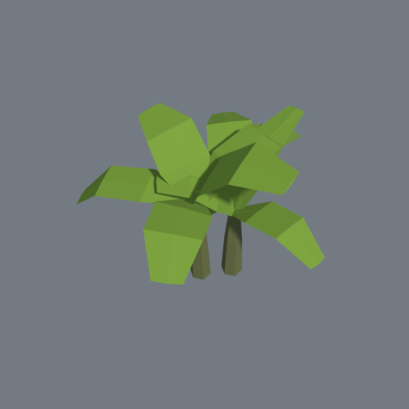
from the camera 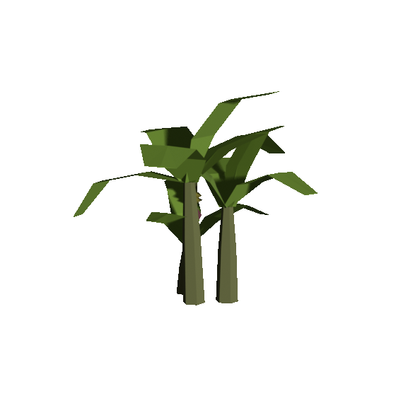
from the side 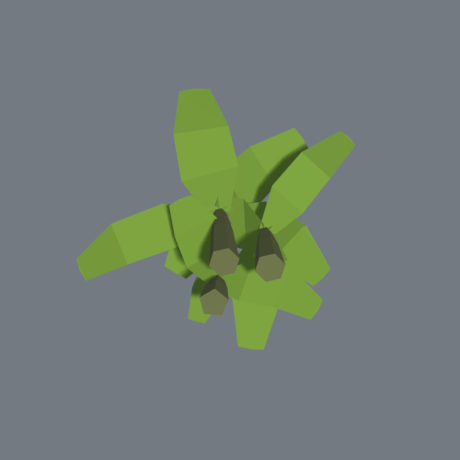
from below
banana
size 4.89 × 4.03 × 4.65 m
triangles 392
vertices 1,146
meshes banana
file 43 kB
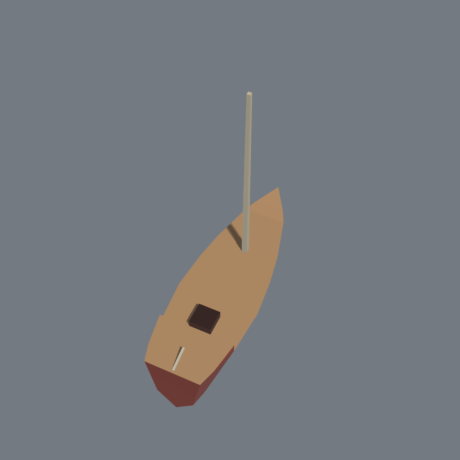
from the camera 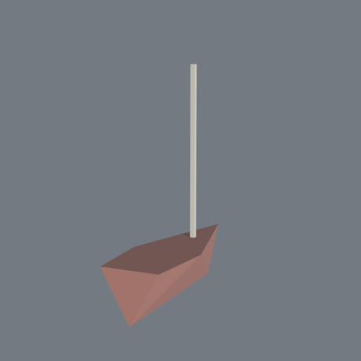
from the side 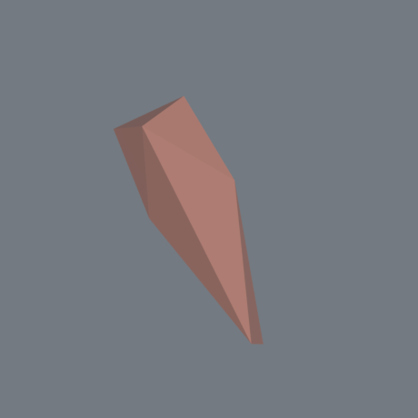
from below
boat
size 2.4 × 7.7 × 7 m
triangles 22
vertices 50
meshes hull, spar
file 3 kB
no colours of its own — the client paints it
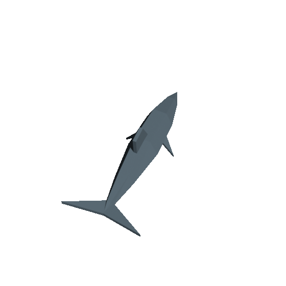
from the camera 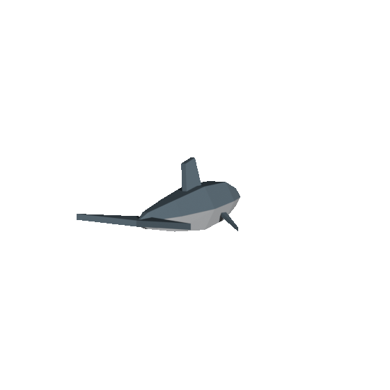
from the side 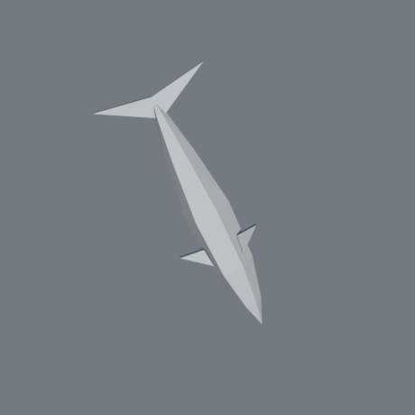
from below
dolphin
size 1.04 × 0.72 × 2.38 m
triangles 100
vertices 252
meshes dolphin
file 10 kB
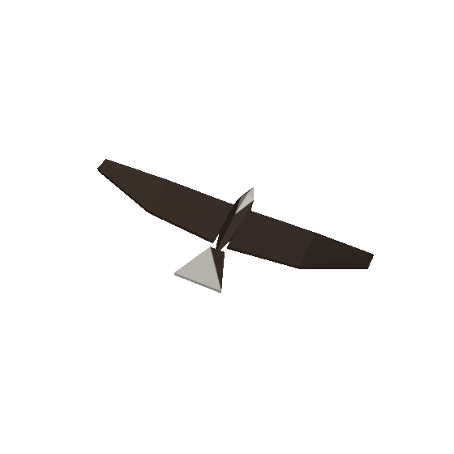
from the camera 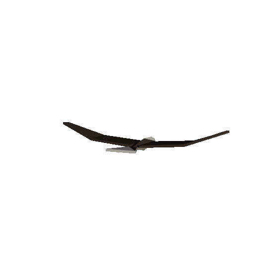
from the side 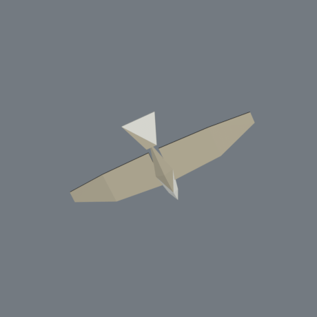
from below
eagle
size 3.7 × 0.56 × 1.7 m
triangles 68
vertices 168
meshes eagle
file 7 kB
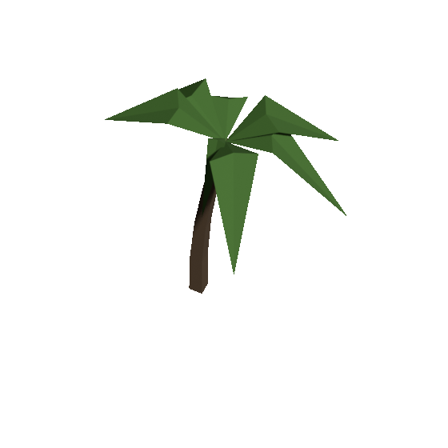
from the camera 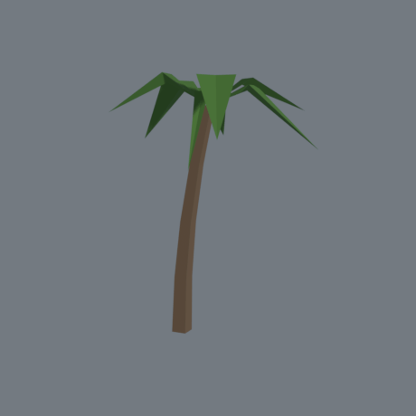
from the side 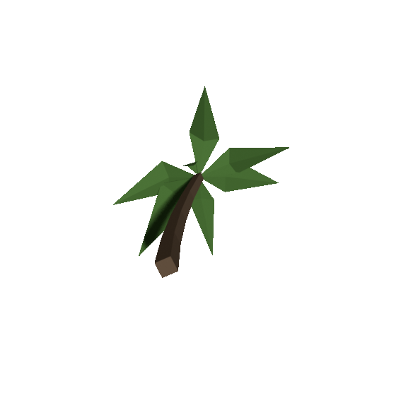
from below
palm
size 5.27 × 6.35 × 4.47 m
triangles 92
vertices 228
meshes palm
file 9 kB
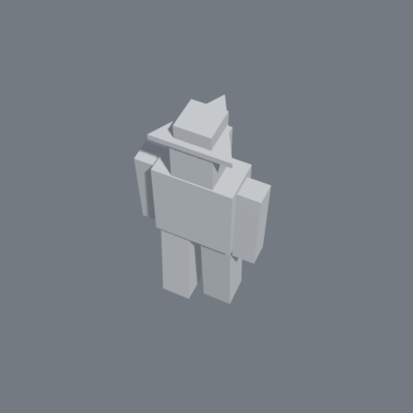
from the camera 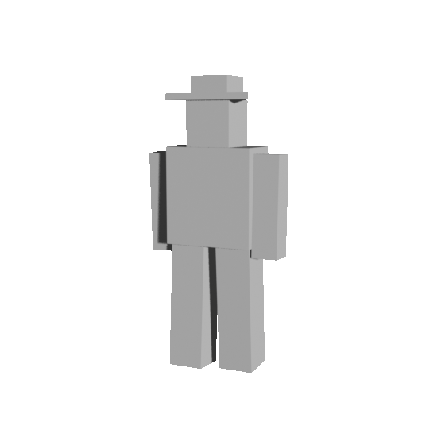
from the side 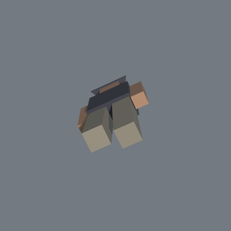
from below
player
size 0.87 × 1.8 × 0.5 m
triangles 92
vertices 186
meshes canvas, coat, skin
clips idle, run
file 24 kB
no colours of its own — the client paints it
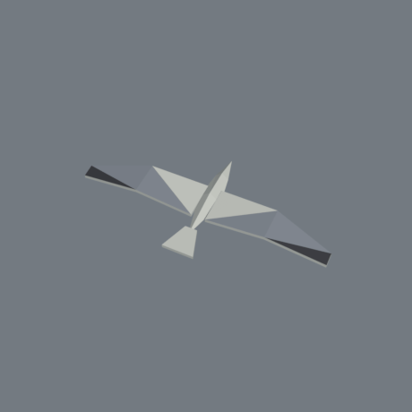
from the camera 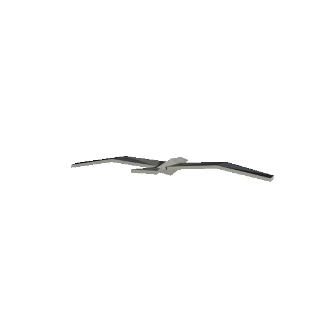
from the side 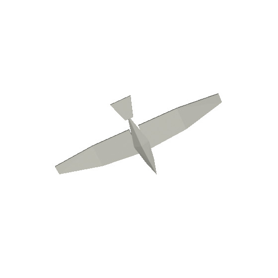
from below
seabird
size 2.1 × 0.17 × 1.02 m
triangles 68
vertices 164
meshes seabird
file 7 kB
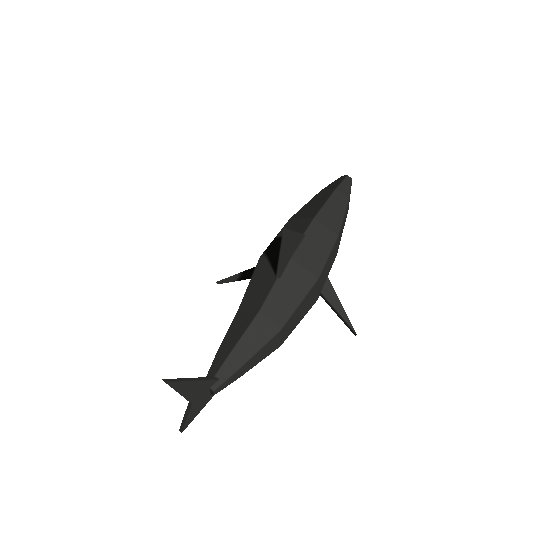
from the camera 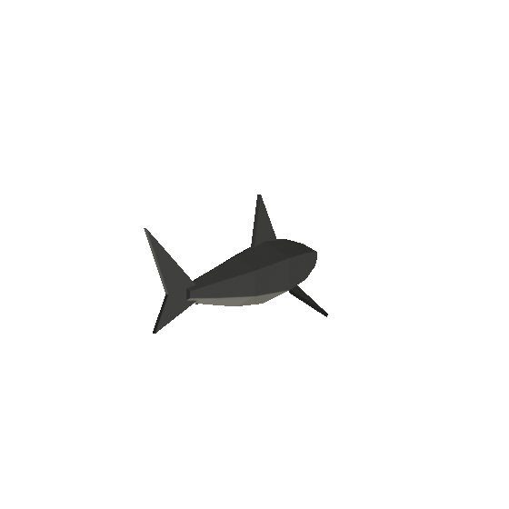
from the side 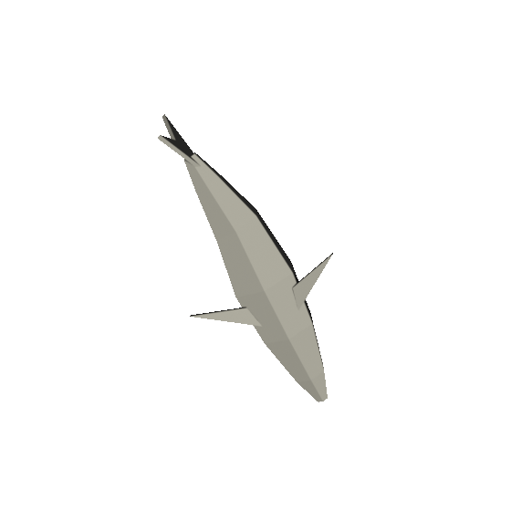
from below
shark
size 1.21 × 0.96 × 2.64 m
triangles 120
vertices 240
meshes hide
clips swim
file 20 kB
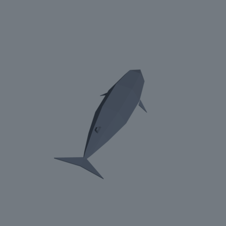
from the camera 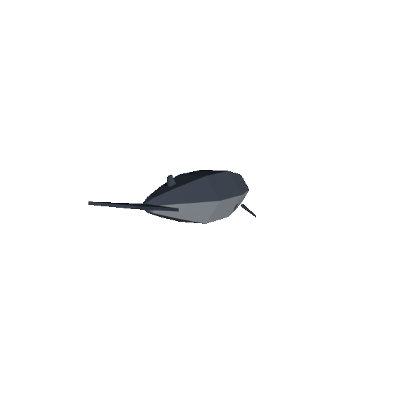
from the side 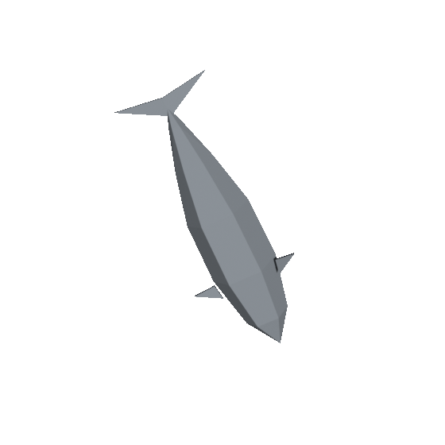
from below
whale
size 4.2 × 2.38 × 11.1 m
triangles 100
vertices 252
meshes whale
file 10 kB